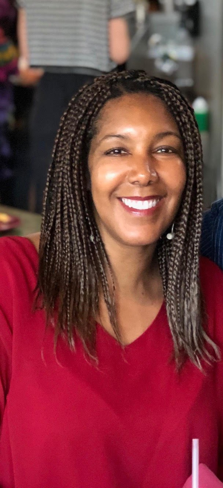
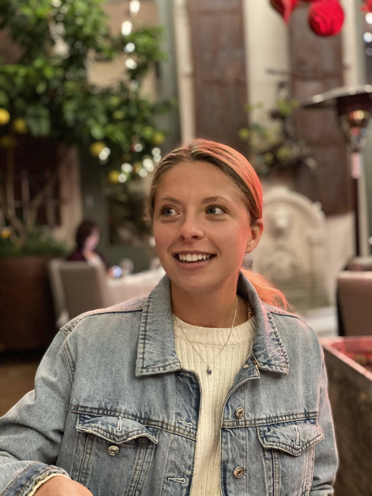
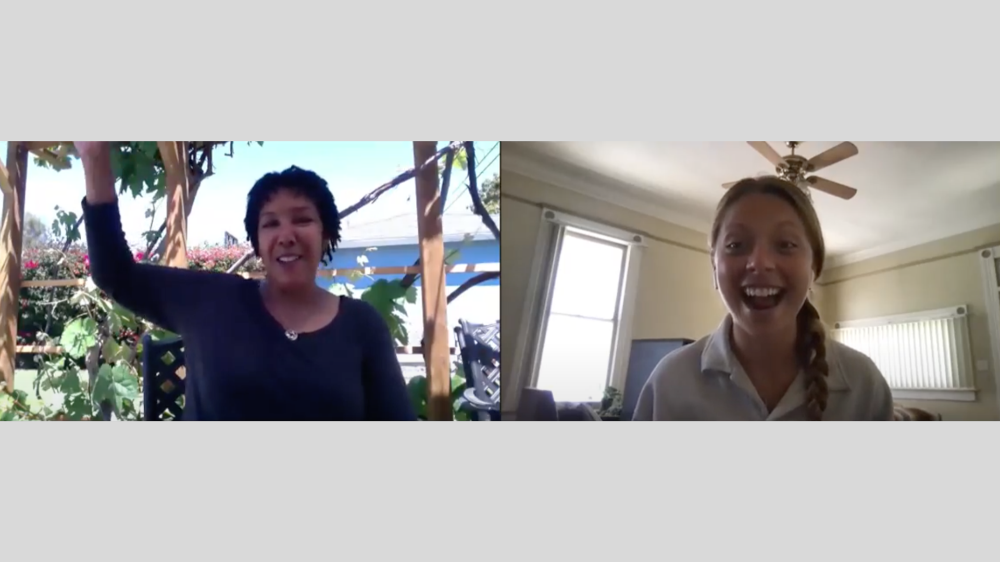
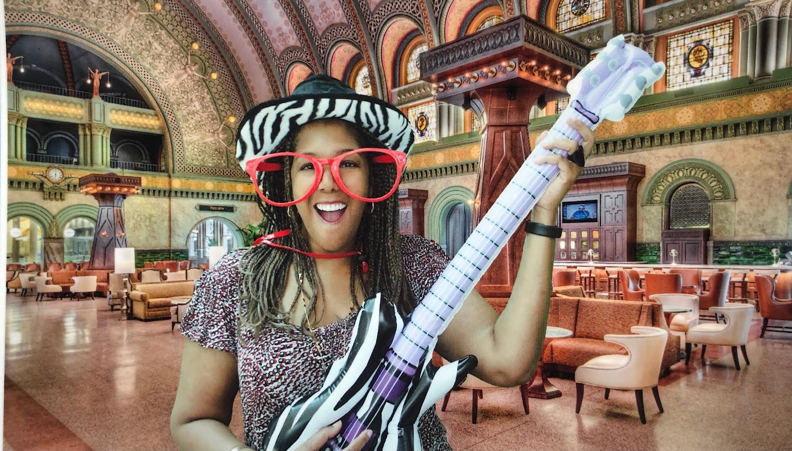
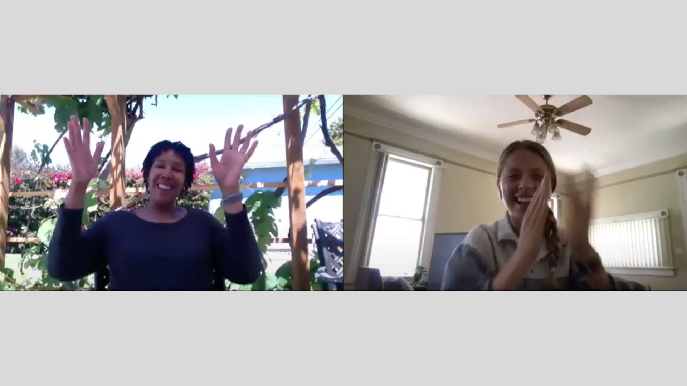

“It was a great experience, not just the music and Here, My Voice. It was just a great collaboration. I couldn't have asked for a better voice instructor.”
“I was reminded why I am passionate about music, beyond the academic and competitive side of it, and I was able to share that with people who feel the same way.”
Wendi Washington
Here, My Voice Participant | Former Teacher
I’m Wendi Washington and I live in Los Angeles. I’m originally from New York, and I have two wonderful sons. I’m a retired teacher and I’m into book clubs. I love basketball. And I have been a member of the Hearing Loss Association of America the LA chapter for about 14 years now. It has been a very supportive group and I’ve been active much of the time. It’s a wonderful organization and I’m happy to be part of it. One of the members there asked me to participate in this study.

Lily Smith
Here, My Voice Teacher | Opera Singer, Master of Musical Arts of USC Thornton School of Music.
I’m Lily Smith, I’m 23 years old. I was born and raised in Paris in France. And then I did my undergrad degree at Northwestern University and I just currently wrapped up my first year of my master’s degree at USC where I’m studying vocal arts. I’m an opera singer.

Wendi’s Experience
Here, My Voice was brought to my attention and I was asked if I would participate. Originally, I thought — no, I don't really sing. And then I was convinced that I didn't have to really sing, I just thought it was interesting. The mention of USC was helpful, because it's right around the corner for me, so I felt a little bit of a kinship there. And I know a few USC grads, and it seemed as if, you know, it was a program worth supporting as it looked at hearing loss and music. So I just thought I could be of some help and learn something at the same time.
From the very beginning, our meeting went so well. I felt very comfortable with Lily and she was very open. I loved that she was down to earth and very open and very competent. Lily also had the good ability to keep us focused — we might talk a little bit and then students say, okay, and we get back to business.
We got everything accomplished.
I really appreciated her patience. I know I had a few technical breakdowns, and had a bit of a tardy problem. Lily was just very patient with me and I really appreciate that.
We had a good time — we talked, we laughed, and just shared bits and pieces of our lives. It was a great experience, not just the music and Here, My Voice. But like I said, just meeting her I felt enriched. I'm just so proud of her, and the work that she's doing and as a grad student — being so far away from family. It was just a great collaboration. I couldn't have asked for a better voice instructor.


Lily’s Experience
Wendi's relationship with music is very pure. She has never studied music, nor has she dreamt at any point of making music her career, but music has nevertheless been omnipresent in her life. She told me about a few of the many concerts she attended where she fondly remembered dancing in the crowd. When one of her favorite old R&B songs comes on, you can tell from the light tapping along to the rhythm and the smile on her face that music certainly has its place in Wendi's life.
In our last lesson, Wendi recited the poem again and it had grown SO much. There was tempo, dynamics, rhythm, tone, and I could tell what each of her choices were with emotion. It was a very powerful presentation. Another aspect that was very fun about working with Wendi is that we got to know each other better, and we realized that we were getting along well and with that came more trust. This enabled us to really enjoy ourselves in our lessons, let go and let loose. Wendi was always willing to "go for it" even when she was nervous or lacking confidence, she knew I wanted her to give it her all and commit, and she always did. This brought a lot of joy because we felt so comfortable and able to do anything that we found ourselves dancing and cheering and laughing very often.
I really enjoyed the HMV study. It opened my eyes to a universe I knew very little about, and made me feel informed enough to be able to advocate and spread awareness about the HOH community. I met many new people on the team, and built a great relationship with my partner Wendi. I was reminded why I am passionate about music, beyond the academic and competitive side of it, and I was able to share that with people who feel the same way. I hope that through my work with Wendi, I was able to bring her more confidence in her voice and make her feel more at ease about re-incorporating music and singing in her life!
